← 返回阅读库 · 原论文目录
论文讲解阅读文档 · 机器人学 · v133
LLaRA Supercharging Robot Learning Data for VLM Policy[2406.20095]
视频时长 00:15:01；讲解文字 6,457 字符；提取讲解画面 205 张。按视频原顺序阅读，每段文字保留时间戳。
文字来自整段视频的自动语音转写，按自然停顿分段，并与 PPT / 论文页面 / 演示画面对齐。未将讲解压缩为摘要；术语、数字和口述公式请结合画面及原论文核对。 阅读稿已校正规范部分明确术语误识别；原始逐字稿和每处修改记录另行保留。
讲解画面为源视频截图（640×360），不是可编辑 PPT 文件。全片按每秒 2 帧扫描内容变化，逐步展开页保留；连续动画保留代表画面。清晰度受源视频限制。
下载完整资料包 · 含离线 HTML、PDF、Word、全部 PPT 画面和字幕。
原论文与材料
LLaRA: Supercharging Robot Learning Data for Vision-Language Policy · 下载完整 PDF（47 页）
按时间阅读
00:00:00–00:00:08 · 画面 001
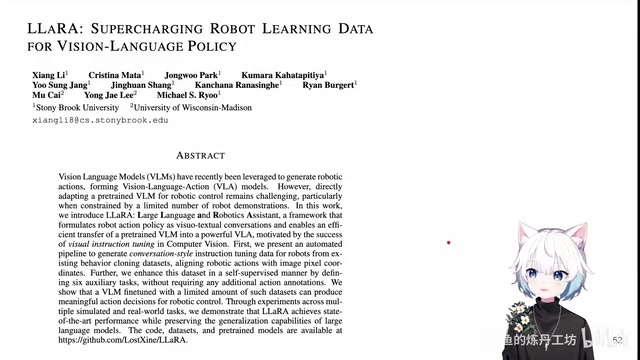
00:00:00–00:00:08 · 画面 001大家好啊，今天我们来快速介绍一篇论文 LLaRA Supercharging Robot Learning Data for Vision Language Policy。那这篇论文呢，是一个利用已经训练好的 Vision Language Model，把它变成一个 Vision Language Action Model 这样的一个高效率的方法。那么这个视频呢，也是在 2025 年 4 月 17 号重制的一个版本。
00:00:08–00:00:09 · 画面 002
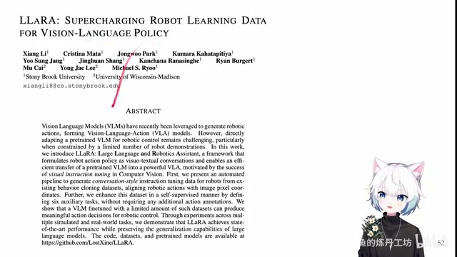
00:00:08–00:00:09 · 画面 00200:00:09–00:00:10 · 画面 003
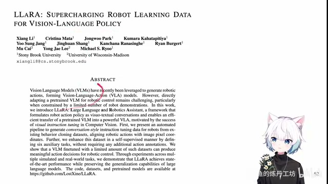
00:00:09–00:00:10 · 画面 00300:00:10–00:00:20 · 画面 004
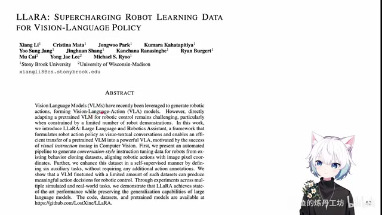
00:00:10–00:00:20 · 画面 00400:00:20–00:00:25 · 画面 005
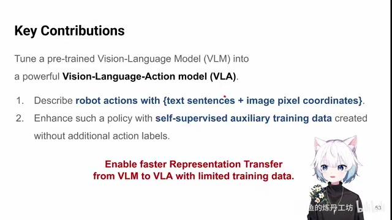
00:00:20–00:00:25 · 画面 005那本文的核心的贡献呢，我们之前说过，就是把一个 Pretrain 好的一个 Vision Language Model 变成一个 Vision Language Action Model。那这个过程中呢，作者说，我可以通过把我的机器人的这个正确的动作对应到这个图像中的某个坐标系的方式。
00:00:25–00:00:26 · 画面 006
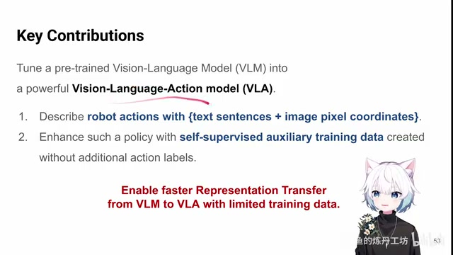
00:00:25–00:00:26 · 画面 00600:00:26–00:00:37 · 画面 007
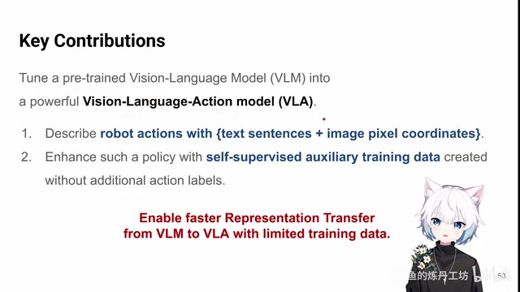
00:00:26–00:00:37 · 画面 007然后再引入一些辅助的数据集来帮助我们去训练。
00:00:37–00:00:38 · 画面 008
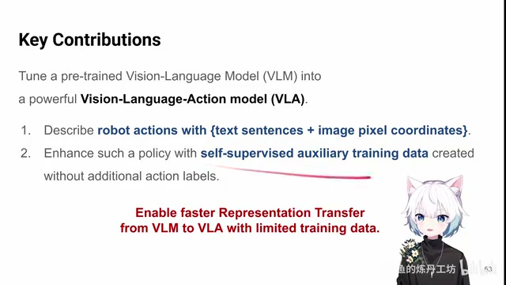
00:00:37–00:00:38 · 画面 00800:00:38–00:00:48 · 画面 009
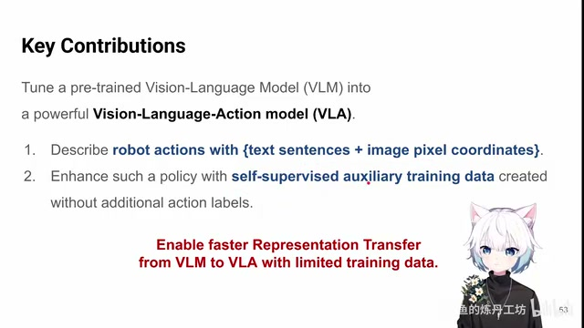
00:00:38–00:00:48 · 画面 009能够实现高效的在有限的训练数据的情况下。能够高效的把一个 Vision Language Model。迁移到 Vision Language Action Model这样的一个情况
00:00:48–00:00:49 · 画面 010
00:00:48–00:00:49 · 画面 01000:00:49–00:00:53 · 画面 011
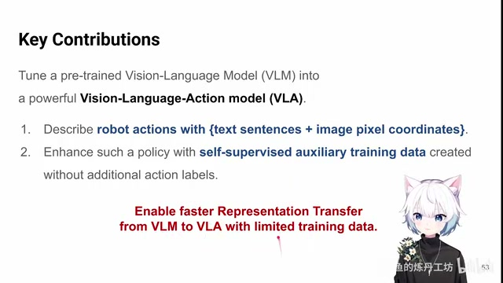
00:00:49–00:00:53 · 画面 011下面我们就继续来看这篇文章的实现。首先一个快速的回顾。
00:00:53–00:01:00 · 画面 012
00:00:53–00:01:00 · 画面 012就是传统的我们用 Vision Language Model 作为一个 Policy。这个东西它也不少见了，对吧。最早是 RT2 这样的一个东西。
00:01:00–00:01:01 · 画面 013
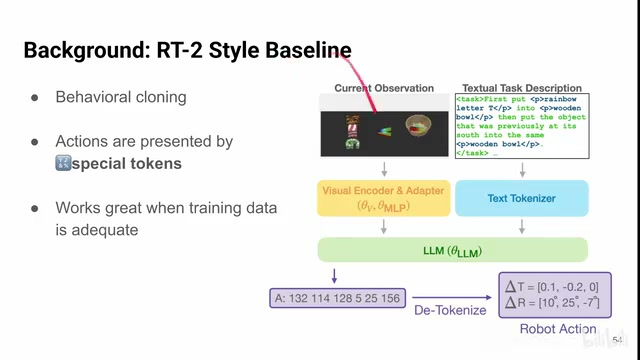
00:01:00–00:01:01 · 画面 013它的就是你一个 Vision Language Model
00:01:01–00:01:06 · 画面 014
00:01:01–00:01:06 · 画面 014比如说 LLaVA图像进到图像的 Encoder一堆 Token 出来那稳稳进入稳稳的 Encoder。
00:01:06–00:01:08 · 画面 015
00:01:06–00:01:08 · 画面 015一堆 Token 出来
00:01:08–00:01:13 · 画面 016
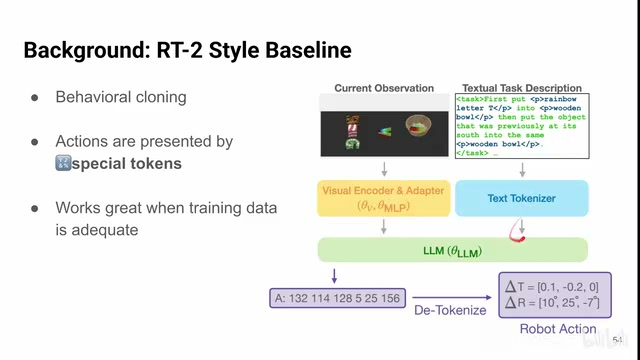
00:01:08–00:01:13 · 画面 016然后送到一个 Large Language Model 里面。Large Language Model 解码出一些 Action
00:01:13–00:01:20 · 画面 017
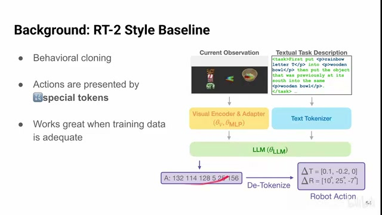
00:01:13–00:01:20 · 画面 017这些 Token 被映射到一个特定的一个伏点数的一个值。那这些值最终可以被解码成真正的机器人的操作。
00:01:20–00:01:32 · 画面 018
00:01:20–00:01:32 · 画面 018这是一个 RT2 的一个经典的格式。但是你可以想到这些 Action。对吧伏点数就是硬是把我们的一个伏点数映射到一个特别的 Token 上。
00:01:32–00:01:35 · 画面 019
00:01:32–00:01:35 · 画面 019那这就当然了导致呢
00:01:35–00:01:43 · 画面 020
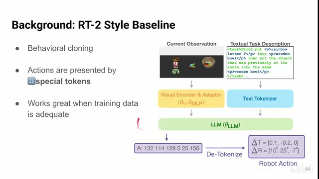
00:01:35–00:01:43 · 画面 020你需要很多的数据去训练它。你有这样的数据那没问题对吧如果你没有这样的数据。那它的这个性能就不是很好。
00:01:43–00:01:44 · 画面 021
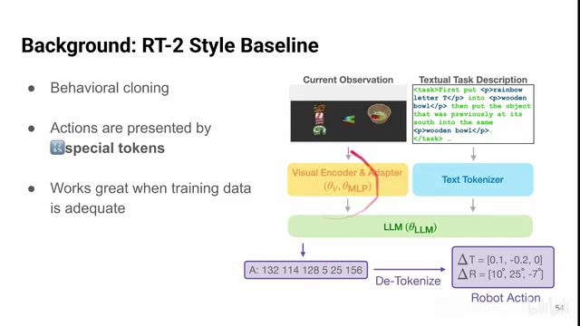
00:01:43–00:01:44 · 画面 02100:01:44–00:01:45 · 画面 022
00:01:44–00:01:45 · 画面 022那相比之下本文呢
00:01:45–00:01:50 · 画面 023
00:01:45–00:01:50 · 画面 023就提出了说我把我的这个 Action映射到这个图像的坐标中前面的输入都还是一样的但你可以看到这里它的 action 表示的不再是一个特别的 token 而是全部的都在文本里面用这样的文本去表达这个图像中的一个坐标这是横坐标 0.5 纵坐标 0.617 照这样一个点这是一个 pick and place 这样一个 action space
00:01:50–00:01:52 · 画面 024
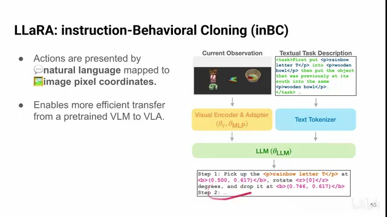
00:01:50–00:01:52 · 画面 02400:01:52–00:02:00 · 画面 025
00:01:52–00:02:00 · 画面 02500:02:00–00:02:02 · 画面 026
00:02:00–00:02:02 · 画面 02600:02:02–00:02:07 · 画面 027
00:02:02–00:02:07 · 画面 02700:02:07–00:02:08 · 画面 028
00:02:07–00:02:08 · 画面 02800:02:08–00:02:14 · 画面 029
00:02:08–00:02:14 · 画面 029那么这样子呢，区别于 RT2 这样的东西，它是在一个文本空间里面直接对应到图像中的这个坐标这样的一个形式。那作者说呢，这样子呢，就可以更好的让利用我们 Pretrain 的 Vision Language Model，毕竟你在你的训练 Vision Language Model 的时候，你肯定有这样的数据，比如说说这个。
00:02:14–00:02:16 · 画面 030
00:02:14–00:02:16 · 画面 03000:02:16–00:02:20 · 画面 031
00:02:16–00:02:20 · 画面 03100:02:20–00:02:21 · 画面 032
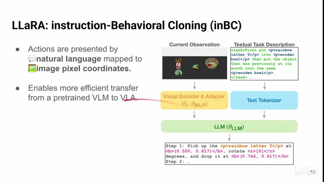
00:02:20–00:02:21 · 画面 03200:02:21–00:02:39 · 画面 033
00:02:21–00:02:39 · 画面 033物体在图像中的哪个坐标，这个物体在图像中的哪个坐标，对不对，你肯定有这样的数据，有这样的数据，你现在构造 Action 的格式跟之前是一样的，跟预训练阶段的时候是一样的，你就可以尽最大可能的去利用这方面的鲜艳的知识。
00:02:39–00:02:40 · 画面 034
00:02:39–00:02:40 · 画面 03400:02:40–00:02:46 · 画面 035
00:02:40–00:02:46 · 画面 035这是本文的第一个核心的贡献。那么当然，你说因为 Vision Language Model 的局限了，你有时候像对 vima 这个任务，你可以看到它有可能会有很多个 reference image 作为它的输入，作为这个 prompt 的输入对吧？我要给很多张图像给我们的 language model 让它去决定。但是在那个时候呢，
00:02:46–00:03:13 · 画面 036
00:02:46–00:03:13 · 画面 036在这个文章出来的时候呢，还是只有像 LLaVA 这种，就是只能在一个对话里面处理一张图的这种情况。那这种情况怎么办呢？我原来的这个 Observation 主要的 Observation 还是正常的该进 Vision Encoder 进 Vision Encoder。
00:03:13–00:03:14 · 画面 037
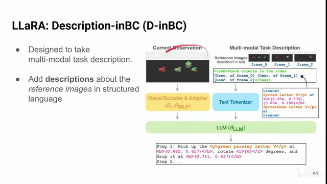
00:03:13–00:03:14 · 画面 03700:03:14–00:03:18 · 画面 038
00:03:14–00:03:18 · 画面 03800:03:18–00:03:20 · 画面 039
00:03:18–00:03:20 · 画面 039我额外的这些 reference image
00:03:20–00:03:24 · 画面 040
00:03:20–00:03:24 · 画面 040就是用来提供作为 prompt 描述的这些东西。作者想到
00:03:24–00:03:25 · 画面 041
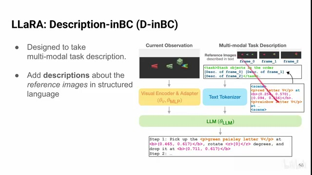
00:03:24–00:03:25 · 画面 041用一个结构化的文本。
00:03:25–00:03:30 · 画面 042
00:03:25–00:03:30 · 画面 042给它表达出来那你所有东西都变成文本了。对吧那还是最终的形态。
00:03:30–00:03:33 · 画面 043
00:03:30–00:03:33 · 画面 043也是一个图像一个文本
00:03:33–00:03:35 · 画面 044
00:03:33–00:03:35 · 画面 044他们这样一起作为 language model 的输入
00:03:35–00:03:36 · 画面 045
00:03:35–00:03:36 · 画面 04500:03:36–00:03:43 · 画面 046
00:03:36–00:03:43 · 画面 046然后输出同样的也是一样的 action。和图像的坐标系对齐的。这是作者处理更多的图像的。
00:03:43–00:03:44 · 画面 047
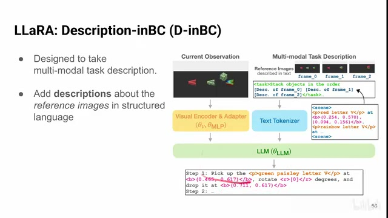
00:03:43–00:03:44 · 画面 04700:03:44–00:03:55 · 画面 048
00:03:44–00:03:55 · 画面 048这样一个方式那当然也有评论里面说了。这不是什么新鲜的技术。这只是一个额外的天头。来帮我们克服这个 reference model培训时候的一个局限。
00:03:55–00:03:56 · 画面 049
00:03:55–00:03:56 · 画面 049那你看到至于结构化的文本。
00:03:56–00:04:02 · 画面 050
00:03:56–00:04:02 · 画面 050对吧它也是表达着这个物品。在什么样坐标这也是图像坐标的这样一个形式。
00:04:02–00:04:03 · 画面 051
00:04:02–00:04:03 · 画面 051这是在原来的技术上的一个拓展。
00:04:03–00:04:07 · 画面 052
00:04:03–00:04:07 · 画面 052针对多图的这么一个构造。那么当然了
00:04:07–00:04:14 · 画面 053
00:04:07–00:04:14 · 画面 053你未必使用结构化文本。对吧你也可以使用自然语言。去描述这样的额外的图片。对吧一样的道理这是各种的变种
00:04:14–00:04:15 · 画面 054
00:04:14–00:04:15 · 画面 05400:04:15–00:04:25 · 画面 055
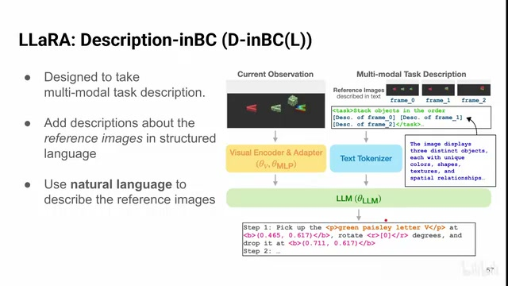
00:04:15–00:04:25 · 画面 055那到这里最主要的核心的思想。还是把我们想要执行的这个 action。给它对齐到图像的这个坐标系里面。这是最重要的
00:04:25–00:04:35 · 画面 056
00:04:25–00:04:35 · 画面 056那么然后呢作者还说了一些其他的 trick 比如说像 action history 对吧你怎么知道你给他一张图你怎么知道你之前做到什么地步对不对那么你之前做过的所有动作也是作为 action 的形式加入到了你的这个 prompt 里面这也是很直接的设计你上一步输出了啥你就直接加进去就完了那么第二步呢就是这个。
00:04:35–00:04:37 · 画面 057
00:04:35–00:04:37 · 画面 05700:04:37–00:04:44 · 画面 058
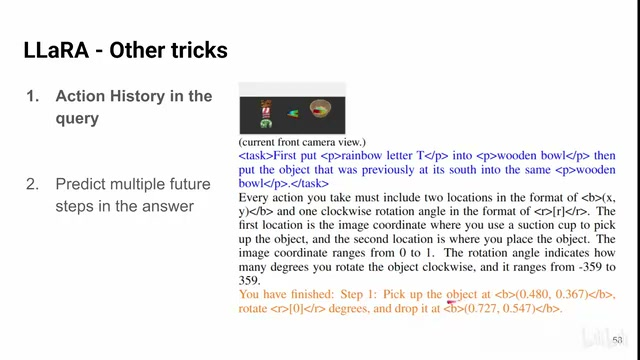
00:04:37–00:04:44 · 画面 05800:04:44–00:04:46 · 画面 059
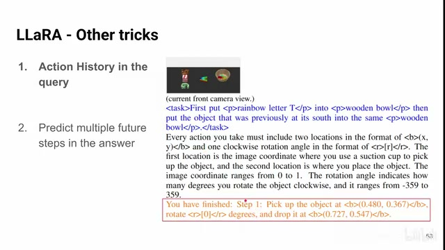
00:04:44–00:04:46 · 画面 05900:04:46–00:04:47 · 画面 060
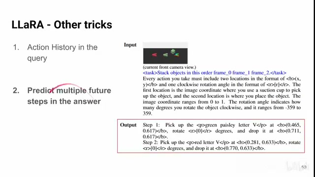
00:04:46–00:04:47 · 画面 060预测未来的多步你也可以往后多看几步一直把动作输出到任务的结束虽然你执行的时候还是每次只拿第一步就执行就结束了这是。
00:04:47–00:04:53 · 画面 061
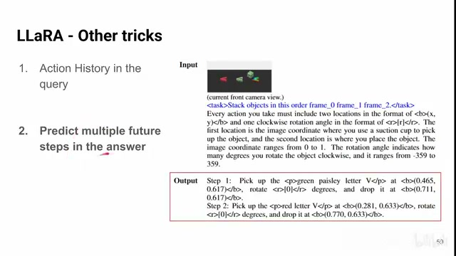
00:04:47–00:04:53 · 画面 06100:04:53–00:04:54 · 画面 062
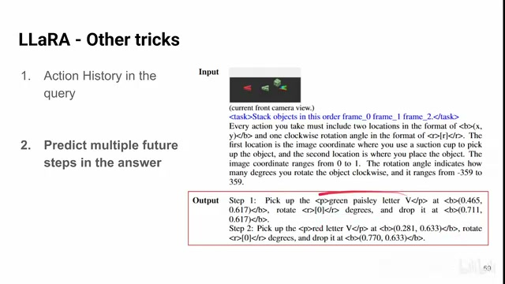
00:04:53–00:04:54 · 画面 06200:04:54–00:04:59 · 画面 063
00:04:54–00:04:59 · 画面 063做着两个小的设计它后面当然也有实验说这两个小设计能够帮忙改善它的性能这都是后悔那么说完 X 的部分我们第二个要看的就是辅助数据集的部分这也是本文一个很重要的一个贡献就是它介绍了 6 种辅助数据集那么这些辅助数据集它也是一个 VQA 的形式它包括比如说像定位定位某个物体你看它问就是给图然后问。
00:04:59–00:05:00 · 画面 064
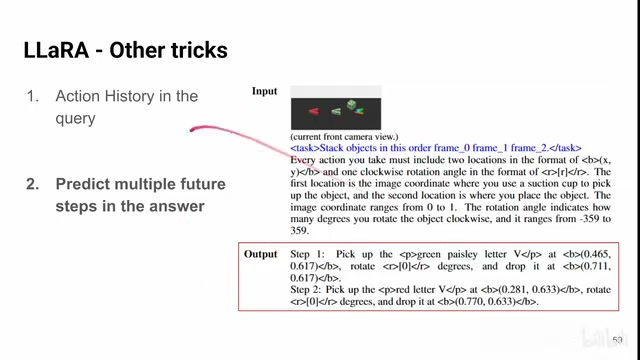
00:04:59–00:05:00 · 画面 06400:05:00–00:05:04 · 画面 065
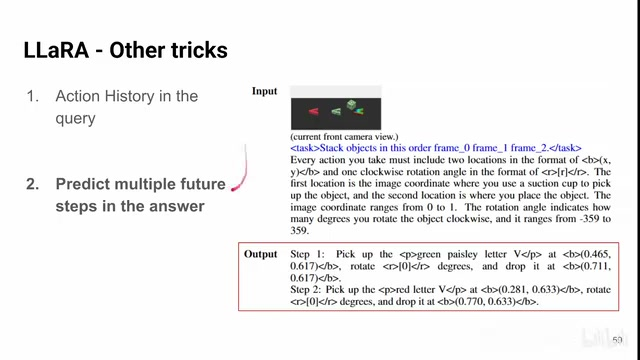
00:05:00–00:05:04 · 画面 06500:05:04–00:05:17 · 画面 066
00:05:04–00:05:17 · 画面 06600:05:17–00:05:18 · 画面 067
00:05:17–00:05:18 · 画面 06700:05:18–00:05:27 · 画面 068
00:05:18–00:05:27 · 画面 068某个物体在哪里对吧你就让他回答这个坐标然后呢 detection 就是相当于把这个图里面所有的这个东西都列出来对吧啊这是一点然后 action prediction future prediction 这个就更像传统 robotics 里面常见的任务对吧你拿到当前的图像然后呢你拿到未来图像啊这也是给出文本的形式吧因为你这个 language model 没法 handle 两个图像啊那么你输出什么样的 action 能够导致。
00:05:27–00:05:28 · 画面 069
00:05:27–00:05:28 · 画面 06900:05:28–00:05:34 · 画面 070
00:05:28–00:05:34 · 画面 07000:05:34–00:05:35 · 画面 071
00:05:34–00:05:35 · 画面 07100:05:35–00:05:42 · 画面 072
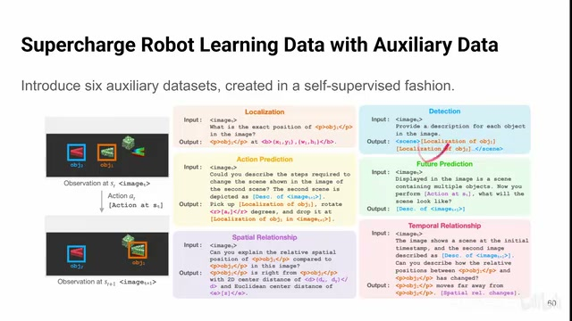
00:05:35–00:05:42 · 画面 07200:05:42–00:05:44 · 画面 073
00:05:42–00:05:44 · 画面 07300:05:44–00:05:50 · 画面 074
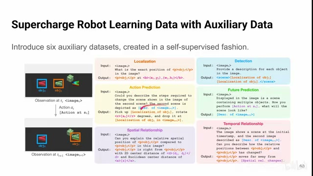
00:05:44–00:05:50 · 画面 07400:05:50–00:06:05 · 画面 075
00:05:50–00:06:05 · 画面 075这两个图像之间的变化对吧还有 future prediction 也是你拿到当前的图像你给它一个 action 然后你问它我执行完 action 之后之后会变成什么样子也是拿文本描述一下对吧通过这样的方法你就让我们的模型对整个的空间的关系对这些数字图像坐标有更好的理解。
00:06:05–00:06:06 · 画面 076
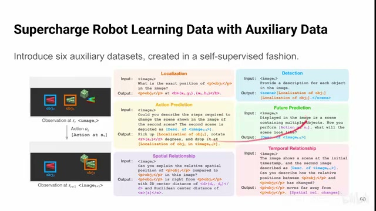
00:06:05–00:06:06 · 画面 07600:06:06–00:06:13 · 画面 077
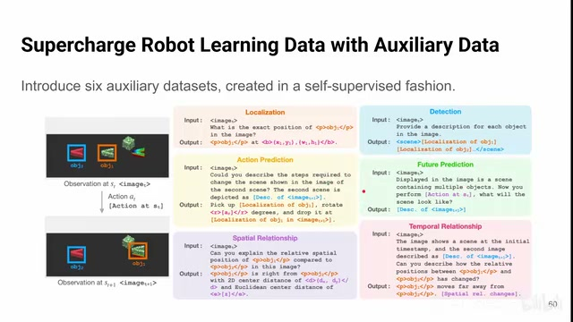
00:06:06–00:06:13 · 画面 077那么后来还有这个空间关系啊这个时间时间关系等等这些都是很直接的设计那么继续来看这个例子对吧你我像我们刚才说的啊给一张图啊问他这个东西在哪里啊这个写出来格式这样子对吧啊底胎是也是一样的就是把图像中所有的东西都列出来。
00:06:13–00:06:14 · 画面 078
00:06:13–00:06:14 · 画面 07800:06:14–00:06:18 · 画面 079
00:06:14–00:06:18 · 画面 07900:06:18–00:06:24 · 画面 080
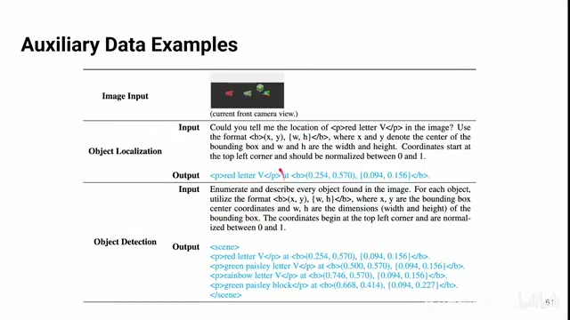
00:06:18–00:06:24 · 画面 08000:06:24–00:06:26 · 画面 081
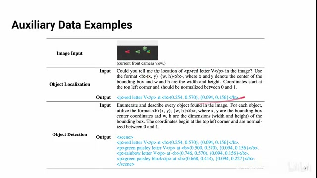
00:06:24–00:06:26 · 画面 08100:06:26–00:06:31 · 画面 082
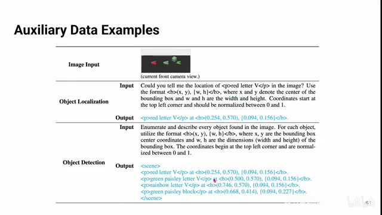
00:06:26–00:06:31 · 画面 082对吧？那这样的辅助数据集引入进来，而且这里为什么要说它是一个 self-supervised 呢？因为在这个过程中它没有引入更多的图像或者是 action 这样的一些信息。但是呢，你其实你可以知道它的这些啊怎么产生了对吧？还是用了这个数据集中的 Ground Truth，用了你可以说是 object detector 这样的东西，根据这些东西来构造出了这样的对话的数据集。所以说呢，它跟 LLaVA 之前的那个 LLaVA 在这个图像检测比如 cocoron 这种，
00:06:31–00:06:32 · 画面 083
00:06:31–00:06:32 · 画面 08300:06:32–00:06:52 · 画面 084
00:06:32–00:06:52 · 画面 08400:06:52–00:06:55 · 画面 085
00:06:52–00:06:55 · 画面 08500:06:55–00:07:08 · 画面 086
00:06:55–00:07:08 · 画面 086使用的数据的方法是相似的你不能说它一连外界的信息都没有介入只不过是它化用了 object detection 这样一个信息那么这边还有 action prediction 的例子还有 future prediction 的例子我们之前也说了就是让我们的模型能够去理解我做完这个操作之后对我们环境产生的影响建立一个更深刻的联系就好。
00:07:08–00:07:11 · 画面 087
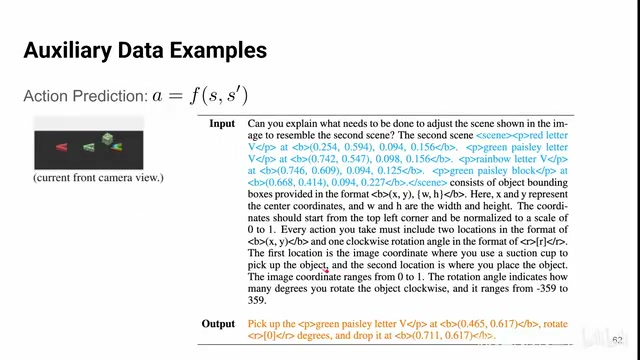
00:07:08–00:07:11 · 画面 08700:07:11–00:07:20 · 画面 088
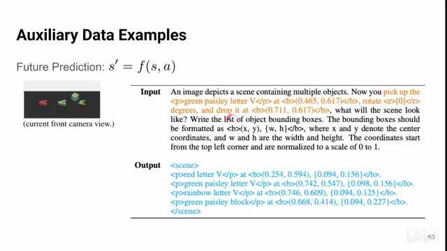
00:07:11–00:07:20 · 画面 08800:07:20–00:07:23 · 画面 089
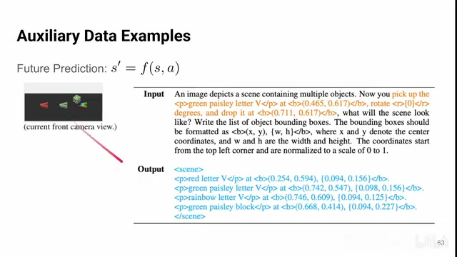
00:07:20–00:07:23 · 画面 08900:07:23–00:07:26 · 画面 090
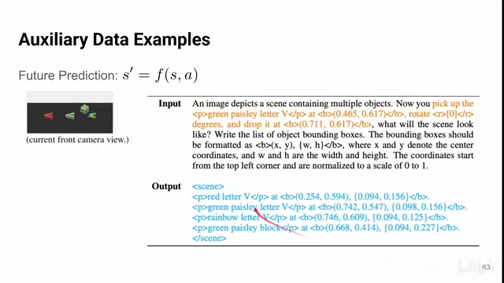
00:07:23–00:07:26 · 画面 090好了，那么以上就是本文主要的一个技术的贡献。那么下面我们直接来看到结果，一个是模拟器上的结果，LLaVA 1.5 7B 这个模型在这个 VIMA 数据集上，它分了三个小数据集，一个是 800 个 episodes8000 个还有 8 万个，然后还有整个的数据集。我们可以看到这是不同的 level 对吧？我们提出的方法比 RT2 base 的方法效果都要好，横轴这里是指数轴数据集的大小。
00:07:26–00:07:27 · 画面 091
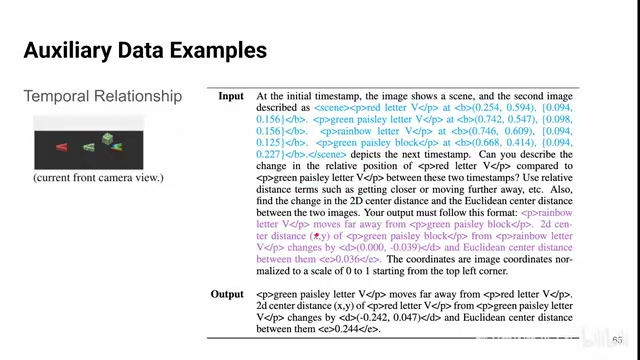
00:07:26–00:07:27 · 画面 09100:07:27–00:07:40 · 画面 092
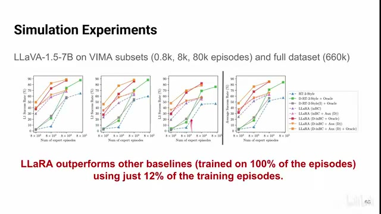
00:07:27–00:07:40 · 画面 09200:07:40–00:07:41 · 画面 093
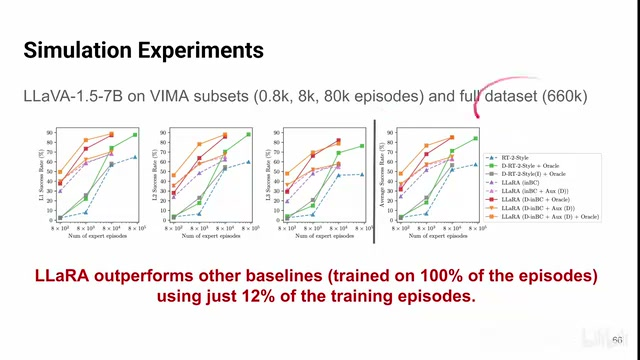
00:07:40–00:07:41 · 画面 09300:07:41–00:07:48 · 画面 094
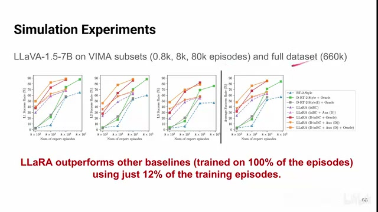
00:07:41–00:07:48 · 画面 09400:07:48–00:07:52 · 画面 095
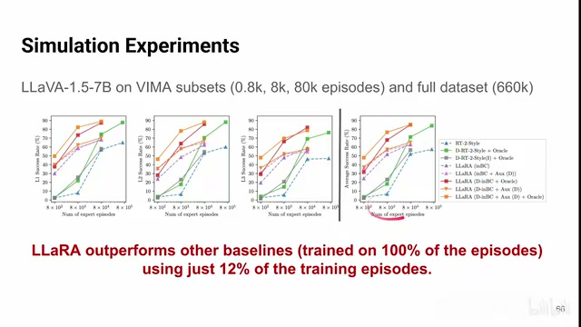
00:07:48–00:07:52 · 画面 095你看特别是在数据级很小的时候，比起 RT2 系列，它的性能是非常好的。但是 RT2 它也不坏，你数量给你的序列数据给够了之后，它还是能够取得一个不错的结果。但是即便如此，你可以看到 train 了 100%的数据还是不如本文技术方法的在 train 了 12%的数据上效果好。
00:07:52–00:07:55 · 画面 096
00:07:52–00:07:55 · 画面 09600:07:55–00:07:59 · 画面 097
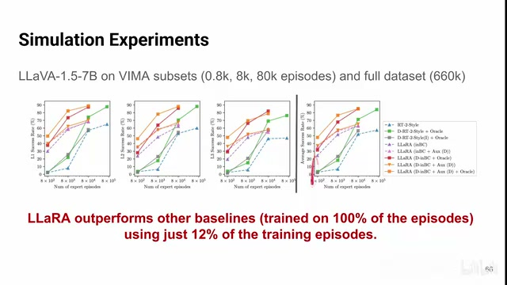
00:07:55–00:07:59 · 画面 09700:07:59–00:08:03 · 画面 098
00:07:59–00:08:03 · 画面 09800:08:03–00:08:04 · 画面 099
00:08:03–00:08:04 · 画面 09900:08:04–00:08:06 · 画面 100
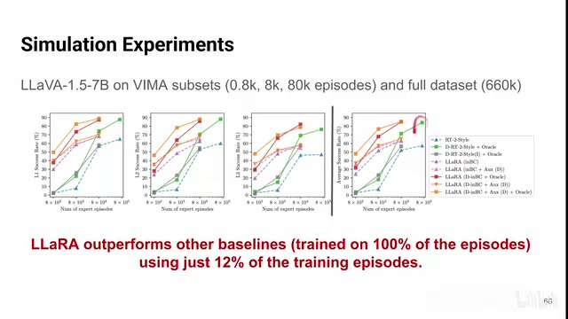
00:08:04–00:08:06 · 画面 10000:08:06–00:08:07 · 画面 101
00:08:06–00:08:07 · 画面 10100:08:07–00:08:16 · 画面 102
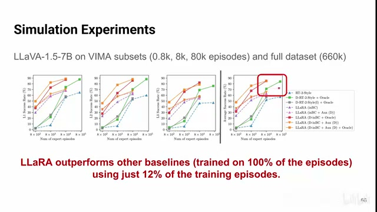
00:08:07–00:08:16 · 画面 102这是一个很直接的一个例子啊，可以看到这个具体的数据里面二次度这些东西对吧？他整体的而来讲，哪怕用了百分百的数据也是不如这个本文的方法用了 12%的数据这样效果好。那么像这边这个解释一下 VIMA 这个数据集对吧？他就是有这样的任务，你得有一个文本，然后你有这样的参考的图像，然后呢你交给这个来回摸动让他去做这样的一个执行的这个任务啊。这里还有更多的例子我们就，
00:08:16–00:08:29 · 画面 103
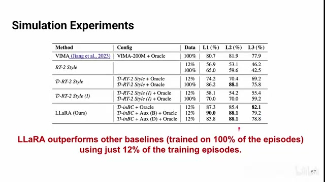
00:08:16–00:08:29 · 画面 10300:08:29–00:08:31 · 画面 104
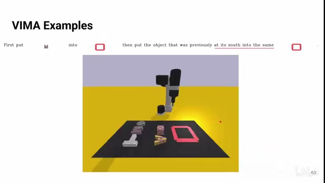
00:08:29–00:08:31 · 画面 10400:08:31–00:08:33 · 画面 105
00:08:31–00:08:33 · 画面 10500:08:33–00:08:35 · 画面 106
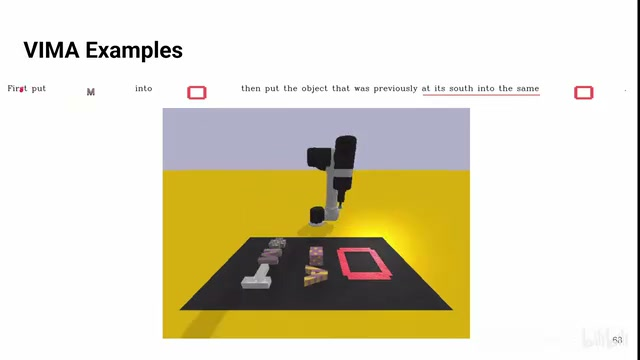
00:08:33–00:08:35 · 画面 10600:08:35–00:08:38 · 画面 107
00:08:35–00:08:38 · 画面 10700:08:38–00:08:39 · 画面 108
00:08:38–00:08:39 · 画面 10800:08:39–00:08:42 · 画面 109
00:08:39–00:08:42 · 画面 10900:08:42–00:08:46 · 画面 110
00:08:42–00:08:46 · 画面 110再详细的去看，总之你可以知道它的这个操作的空间是一个 SE2，就是 Pick and Place。它并不是那种高频的控制，是一个比较 high level 的一个东西。但是这个问题也是值得做的。那么下面进入到这个 Evolution 的环节，那首先肯定是自然要说这个辅助数据集的作用有多少对吧？那么这个表里面就显示了辅助数据集，你看到 ABCD 这是不同的辅助数据集的配置。一般来说这个。
00:08:46–00:08:50 · 画面 111
00:08:46–00:08:50 · 画面 11100:08:50–00:08:54 · 画面 112
00:08:50–00:08:54 · 画面 11200:08:54–00:08:58 · 画面 113
00:08:54–00:08:58 · 画面 11300:08:58–00:09:03 · 画面 114
00:08:58–00:09:03 · 画面 11400:09:03–00:09:04 · 画面 115
00:09:03–00:09:04 · 画面 11500:09:04–00:09:14 · 画面 116
00:09:04–00:09:14 · 画面 116辅助数据集给的越多，你的模型的性能会越好。上面是 inbc，下面是 D-inBC 对吧？这两个就是不同的配置，得到了结论大的趋势是差不多的。与此同时，你把辅助数据集哪怕你不给本文 LLaRA，你给 rt2 相关的这样的一个方法，它也是能够提升性能的。
00:09:14–00:09:16 · 画面 117
00:09:14–00:09:16 · 画面 11700:09:16–00:09:20 · 画面 118
00:09:16–00:09:20 · 画面 11800:09:20–00:09:22 · 画面 119
00:09:20–00:09:22 · 画面 11900:09:22–00:09:32 · 画面 120
00:09:22–00:09:32 · 画面 12000:09:32–00:09:33 · 画面 121
00:09:32–00:09:33 · 画面 12100:09:33–00:09:42 · 画面 122
00:09:33–00:09:42 · 画面 122说明我们的 vision language model 还是需要学习一个，特别是学习这些和 action 控制本身没有关系的这些东西，它们也是有帮助的。这是这一点。
00:09:42–00:10:05 · 画面 123
00:09:42–00:10:05 · 画面 123那么当然你说因为我们辅助数据集给上去了，我的整个训练集大了，是不是因为我更新相同 epoc 的时候我更新模型的步数变多了就导致了我们这个性能变好呢？这里做着说不是的，你哪怕按着原来的数据集你一直训练，你给他加到 8 个 epoc 对吧？你就一直训他的性能也就这样了，他也不会有太好的继续的增长。这是本文的一个观察，就是说没有辅助数据集你也就到这。那么更多的比如说像我们之前说的这些 trick，比如说 action。
00:10:05–00:10:06 · 画面 124
00:10:05–00:10:06 · 画面 12400:10:06–00:10:09 · 画面 125
00:10:06–00:10:09 · 画面 12500:10:09–00:10:16 · 画面 126
00:10:09–00:10:16 · 画面 126history 然后 multiple stepprediction 就是这种 planning 这里作者都说为什么它们有用。那么然后还有就是 natural language 有 natural language 是描述这些 reference image 而不是像我们之前个 structure language 去描述那性能会差一点，但整体来说差的也不是很大。这是这一点。那么还有研究比如说抓什么东西失败了对吧？这里假如说有 10%的概率抓东西失败了会怎么样对吧？性能掉的也不是很多。
00:10:16–00:10:17 · 画面 127
00:10:16–00:10:17 · 画面 12700:10:17–00:10:18 · 画面 128
00:10:17–00:10:18 · 画面 12800:10:18–00:10:23 · 画面 129
00:10:18–00:10:23 · 画面 12900:10:23–00:10:24 · 画面 130
00:10:23–00:10:24 · 画面 13000:10:24–00:10:26 · 画面 131
00:10:24–00:10:26 · 画面 13100:10:26–00:10:28 · 画面 132
00:10:26–00:10:28 · 画面 13200:10:28–00:10:32 · 画面 133
00:10:28–00:10:32 · 画面 13300:10:32–00:10:38 · 画面 134
00:10:32–00:10:38 · 画面 13400:10:38–00:10:40 · 画面 135
00:10:38–00:10:40 · 画面 13500:10:40–00:10:43 · 画面 136
00:10:40–00:10:43 · 画面 136说明程序是有一定乳房线的，他至少是在看这个图像。
00:10:43–00:11:13 · 画面 137
00:10:43–00:11:13 · 画面 137那么还有我们说为什么我们要费那么大劲用文本去描述图像？假如说我直接把很多个图像一起放到对话里面会怎么样对吧？我有一个对话里面有很多个图像一起弄，我就省略文本这个步骤会怎么样？答案是性能掉的是非常大。为什么就是因为我们的用的 LLaVA 模型很老的一个模型了，它没有在多图的情况下 train 过。所以说这也是从另一个角度，说明了本文会很强的依赖于这个危险的模特的陪吹你啊，这也是一个比较重要的观察。那么后面当然还是说你个 object detector 对吧？你用了 D-inBC，你肯定要用这个 object detector 去把这个 reference image 描述出来啊，什么样的这个 object detector 会是更好的。那么那么最后还有这个 prompt 的影响啊，你加什么样的 prompt 提什么样的问题对这个模型性能的影响对吧？这里也都列出来，基本说每一个 prompt 和这个 random prompt 差别差的不是很大。
00:11:13–00:11:14 · 画面 138
00:11:13–00:11:14 · 画面 13800:11:14–00:11:18 · 画面 139
00:11:14–00:11:18 · 画面 13900:11:18–00:11:29 · 画面 140
00:11:18–00:11:29 · 画面 14000:11:29–00:11:34 · 画面 141
00:11:29–00:11:34 · 画面 14100:11:34–00:11:36 · 画面 142
00:11:34–00:11:36 · 画面 14200:11:36–00:11:38 · 画面 143
00:11:36–00:11:38 · 画面 14300:11:38–00:11:39 · 画面 144
00:11:38–00:11:39 · 画面 14400:11:39–00:11:47 · 画面 145
00:11:39–00:11:47 · 画面 145除了 D-inBC 除了这一个 case 就是没有 prompt 的时候反而比加 prompt 比较好不知道为什么后面还有比如说像已经有了当时 GPT-4O 然后 Llama3 这种 LLaVA1.5、LLaVA1.6 这种东西他们
00:11:47–00:11:54 · 画面 146
00:11:47–00:11:54 · 画面 14600:11:54–00:11:55 · 画面 147
00:11:54–00:11:55 · 画面 14700:11:55–00:12:00 · 画面 148
00:11:55–00:12:00 · 画面 148如果直接拿来不做任何训练等等啊，其实性能是很差的。说明我们是需要用 VIMA 这样的一个斗面的这个数据来去训练，才能获得好的结果的啊。所以说 transfer 是有必要的。这些等等这些实验的感兴趣的朋友呢，非常推荐你到原文查看。好，那么然后到了这个真机实验的部分啊。真机就是那这里，作者他设置了一个非常简单的情况。
00:12:00–00:12:02 · 画面 149
00:12:00–00:12:02 · 画面 14900:12:02–00:12:11 · 画面 150
00:12:02–00:12:11 · 画面 15000:12:11–00:12:12 · 画面 151
00:12:11–00:12:12 · 画面 15100:12:12–00:12:16 · 画面 152
00:12:12–00:12:16 · 画面 15200:12:16–00:12:20 · 画面 153
00:12:16–00:12:20 · 画面 15300:12:20–00:12:24 · 画面 154
00:12:20–00:12:24 · 画面 154你可以看到场景非常简单，但是呢，它使得这个简单的场景变得对机器人会很困难。为什么呢？因为只用了 8000 个 episode 的 VIMA 的数据集去 fine-tune 一个 LLaVA 模型。所以说它只看到了非常有限的这个模拟环境里面的这个数据。同时呢，你还要在这个真实环境里面测对吧。这个 domain gap 你看到上面是这个模拟环境里面的图像，下面是这种真实环境的图像。那这个 domain gap 呢就很大了。
00:12:24–00:12:28 · 画面 155
00:12:24–00:12:28 · 画面 15500:12:28–00:12:32 · 画面 156
00:12:28–00:12:32 · 画面 15600:12:32–00:12:36 · 画面 157
00:12:32–00:12:36 · 画面 15700:12:36–00:12:38 · 画面 158
00:12:36–00:12:38 · 画面 15800:12:38–00:12:42 · 画面 159
00:12:38–00:12:42 · 画面 15900:12:42–00:12:47 · 画面 160
00:12:42–00:12:47 · 画面 16000:12:47–00:12:49 · 画面 161
00:12:47–00:12:49 · 画面 16100:12:49–00:12:53 · 画面 162
00:12:49–00:12:53 · 画面 162即便这种情况下，作者发现顺好的模型你不做任何的调整，只见过模拟数据的情况下不做任何的调整去执行这些任务，它的成功率还是有一些的，不是零。相比之下，RT2 这样的东西就变得很难受了，因为它的数据集太少了。这是一点，假如说你在这种现实的环境中稍微反吞一下。
00:12:53–00:12:55 · 画面 163
00:12:53–00:12:55 · 画面 16300:12:55–00:13:01 · 画面 164
00:12:55–00:13:01 · 画面 16400:13:01–00:13:03 · 画面 165
00:13:01–00:13:03 · 画面 16500:13:03–00:13:11 · 画面 166
00:13:03–00:13:11 · 画面 16600:13:11–00:13:15 · 画面 167
00:13:11–00:13:15 · 画面 16700:13:15–00:13:18 · 画面 168
00:13:15–00:13:18 · 画面 168用这种小的数据集，大 1000 多个图像稍微 fine-tuning 一下，你看到本文的成功率会大幅的增加。所以说再次说本文是一个非常高效的，再次体现本文对数据利用的效用是很好。那么后面还有 joint training，就是把你的模拟数据集和真实数据集一块训练，那么这一块结果肯定是不如你单独只为真实环境中 fine-tuning 的结果来好，但是也还是可以的。
00:13:18–00:13:19 · 画面 169
00:13:18–00:13:19 · 画面 16900:13:19–00:13:20 · 画面 170
00:13:19–00:13:20 · 画面 17000:13:20–00:13:21 · 画面 171
00:13:20–00:13:21 · 画面 17100:13:21–00:13:25 · 画面 172
00:13:21–00:13:25 · 画面 17200:13:25–00:13:27 · 画面 173
00:13:25–00:13:27 · 画面 17300:13:27–00:13:31 · 画面 174
00:13:27–00:13:31 · 画面 17400:13:31–00:13:33 · 画面 175
00:13:31–00:13:33 · 画面 17500:13:33–00:13:37 · 画面 176
00:13:33–00:13:37 · 画面 17600:13:37–00:13:39 · 画面 177
00:13:37–00:13:39 · 画面 17700:13:39–00:13:43 · 画面 178
00:13:39–00:13:43 · 画面 178那么后面作者还展示了一些其他的额外的任务，这些任务都是原始的训练集里面没有出现的。他如果能够做成这样的任务，肯定也是全靠了微神两个人模组已经有的这些知识在里面去做的。当然你看到这个结果对吧，肯定这个视频都在这里，肯定都是 cherry-picked。真实的成功率也就大概 5%-60%但是假如说你用 RT2 相关的这种方法来去做的话，他在这么小的数据的量的情况下是学不了什么东西的。
00:13:43–00:13:46 · 画面 179
00:13:43–00:13:46 · 画面 17900:13:46–00:13:49 · 画面 180
00:13:46–00:13:49 · 画面 18000:13:49–00:13:50 · 画面 181
00:13:49–00:13:50 · 画面 18100:13:50–00:13:54 · 画面 182
00:13:50–00:13:54 · 画面 18200:13:54–00:13:55 · 画面 183
00:13:54–00:13:55 · 画面 18300:13:55–00:13:58 · 画面 184
00:13:55–00:13:58 · 画面 18400:13:58–00:14:01 · 画面 185
00:13:58–00:14:01 · 画面 18500:14:01–00:14:02 · 画面 186
00:14:01–00:14:02 · 画面 18600:14:02–00:14:06 · 画面 187
00:14:02–00:14:06 · 画面 18700:14:06–00:14:10 · 画面 188
00:14:06–00:14:10 · 画面 18800:14:10–00:14:11 · 画面 189
00:14:10–00:14:11 · 画面 18900:14:11–00:14:14 · 画面 190
00:14:11–00:14:14 · 画面 190后面还有其他的视频对吧，简单的看一看就好。那么总的来说，这一篇就是研究了如何高效的把一个 Vision Language Model 变成一个 VLA。然后两点，一个是把 action 对到你的 image pixel 上，另一点就是介绍了这些辅助的数据集，这些都是有用的观察。
00:14:14–00:14:18 · 画面 191
00:14:14–00:14:18 · 画面 19100:14:18–00:14:22 · 画面 192
00:14:18–00:14:22 · 画面 19200:14:22–00:14:24 · 画面 193
00:14:22–00:14:24 · 画面 19300:14:24–00:14:25 · 画面 194
00:14:24–00:14:25 · 画面 19400:14:25–00:14:28 · 画面 195
00:14:25–00:14:28 · 画面 19500:14:28–00:14:32 · 画面 196
00:14:28–00:14:32 · 画面 19600:14:32–00:14:36 · 画面 197
00:14:32–00:14:36 · 画面 197但是呢，很明显的一个局限就是你看到他做的是这种非常稀疏的 spark，而且这个 action space 这个 pick and place 这样的一个任务，你既然是用一个二维的图像坐标去描述你的 action，那说明你肯定也干不了三维的这种任务，这是一个比较明显的局限。那么你想肯定呢，后面他们会针对这个方向再继续改进对吧？好的，那么以上就是我对这个文章一个非常快速的整理啊。那么还是感兴趣的朋友呢，非常推荐你到原文查看，那么感谢您的收看，请多多指点。
00:14:36–00:14:40 · 画面 198
00:14:36–00:14:40 · 画面 19800:14:40–00:14:44 · 画面 199
00:14:40–00:14:44 · 画面 19900:14:44–00:14:47 · 画面 200
00:14:44–00:14:47 · 画面 20000:14:47–00:14:51 · 画面 201
00:14:47–00:14:51 · 画面 20100:14:51–00:14:55 · 画面 202
00:14:51–00:14:55 · 画面 20200:14:55–00:14:59 · 画面 203
00:14:55–00:14:59 · 画面 20300:14:59–00:15:01 · 画面 204
00:14:59–00:15:01 · 画面 20400:15:01–00:15:01 · 画面 205
00:15:01–00:15:01 · 画面 205转写与来源说明 · 3 个自动复核提示
保留 115 个原始语音片段，3 个片段触发自动复核提示。提示仅用于定位可能的术语、重复或识别问题，不等于已确认错误。
讲解画面为源视频截图（640×360），不是可编辑 PPT 文件。全片按每秒 2 帧扫描内容变化，逐步展开页保留；连续动画保留代表画面。清晰度受源视频限制。
原视频：paper/合集_2026-10-16_机器人学/[论文速览]LLaRA Supercharging Robot Learning Data for VLM Policy[2406.20095].mp4
SHA-256：20df25a60ebea1a78a2f410f48ab7d14021a59f640942ef73fd88bbf7d5ef783
迁移到 Vision Language Action Model
它的就是你一个 Vision Language Model
history 然后 multiple stepprediction 就是这种 planning 这里作者都说为什么它们有用。那么然后还有就是 natural language 有 natural language 是描述这些 reference image 而不是像我们之前个 structure language 去描述那性能会差一点，但整体来说差的也不是很大。这是这一点。那么还有研究比如说抓什么东西失败了对吧？这里假如说有 10%的概率抓东西失败了会怎么样对吧？性能掉的也不是很多。
全文按视频语音与画面制作。原论文可从上方链接下载；完整资料包保留全文、原始逐字稿、字幕和校对记录。